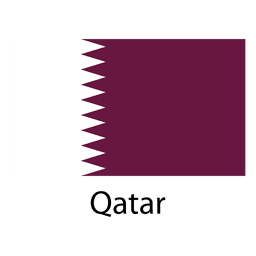
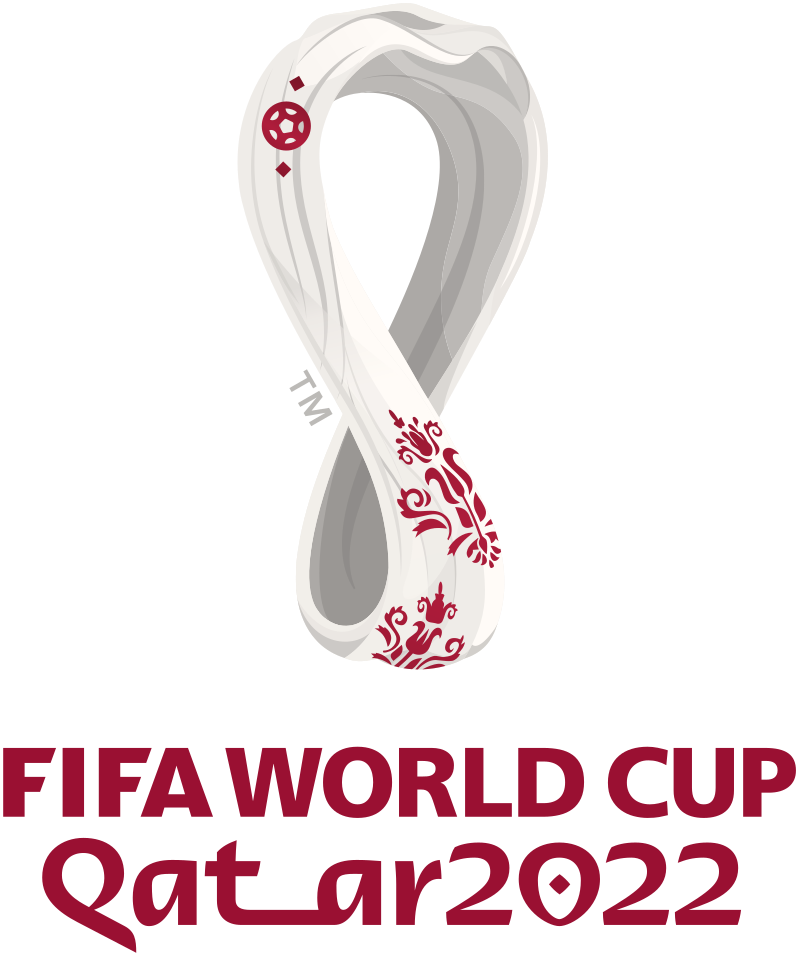

Catar

Catar é um país peninsular árabe cuja paisagem abrange
um deserto árido e um longo litoral no Golfo Pérsico (Árabe)
repleto de praias e dunas. Também na costa, fica a capital Doha,
conhecida pelos arranha-céus futuristas e pela arquitetura
ultramoderna inspirada no antigo design islâmico, com exemplos
como o Museu de Arte Islâmica, feito de calcário e localizado
no calçadão à beira-mar da cidade, chamado de Corniche.
População 2.743.901 (2019)
O país é rico em recursos naturais, sendo um dos maiores produtores de gás natural do mundo.
No ano de 1974, o Qatar Petroleum assumiu a exploração e controle do petróleo existente no país, alavancando a economia.
Copa 2022

A Copa do Mundo é uma competição organizada pela Federação Internacional de Futebol e surgiu em 1930.
A Copa do Mundo FIFA 2022 ocorrerá no Catar de 21 de novembro de 2022 a 18 de dezembro de 2022.
Serão 32 seleções divididas em 8 grupos com quatro times cada.
Cada grupo é identificado por uma letra do alfabeto de A até H.
Os jogos ocorrerão em 8 estádios